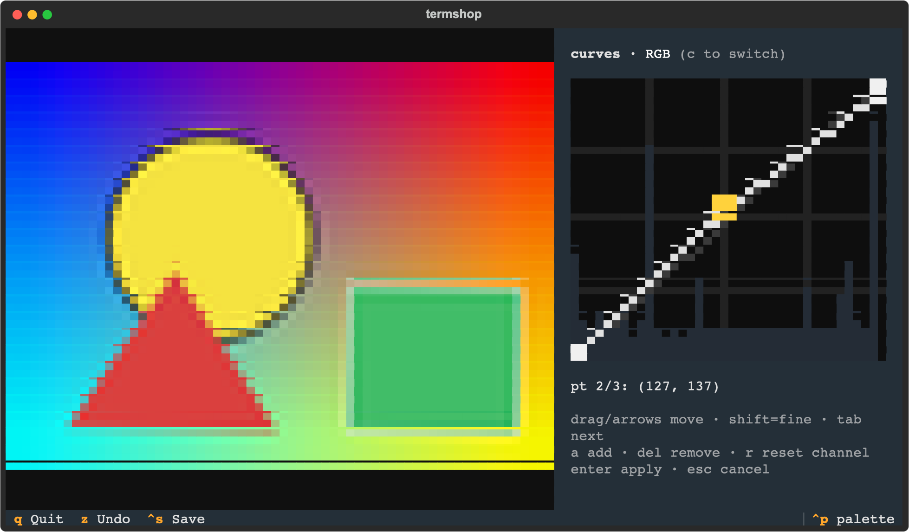

Crop with the mouse, drag tone curves with live preview, straighten horizons, and batch-export whole folders — without ever leaving the terminal.
macOSLinuxWindows · Python 3.10+ · MITThe live demo runs the real app server-side — no install, sample photos included.

Non-destructive by design: edits are an operation pipeline previewed on a downscaled copy and replayed at full resolution on save.
Kitty graphics in kitty & Ghostty, sixel in WezTerm/iTerm2, unicode half-blocks everywhere else — auto-detected.
k — Fritsch–Carlson monotone splines, per RGB channel, live histogram behind the plot, mouse-draggable points.
c then drag; x locks 1:1, 4:3, 3:2 or 16:9. Zoom in first to crop a detail exactly.
, . tilt in 0.5° steps ( < > for 0.1°) — black wedges are auto-cropped away.
[ ] flip through a folder with per-photo history. Edits persist to a sidecar file across restarts.
V paste a screenshot in, edit, Y copy the full-res result back out.
One-liner on macOS/Linux, or any Python tool installer on all three platforms.
# macOS / Linux $ curl -fsSL https://21prnv.github.io/termshop/install | bash # or pick your tool (macOS / Linux / Windows) $ uv tool install git+https://github.com/21prnv/termshop.git $ pipx install git+https://github.com/21prnv/termshop.git $ pip install git+https://github.com/21prnv/termshop.git # then $ termshop photo.jpg $ termshop ~/Pictures
| macOS clipboard paste | brew install pngpaste |
| Linux (Wayland) | wl-clipboard |
| Linux (X11) | xclip |
Edit interactively, export headlessly — or copy one photo's recipe onto hundreds.
$ termshop --commit ~/Pictures --clear # export all saved edits $ termshop --apply best.jpg *.jpg # reuse one photo's recipe $ termshop --apply ops.json pics/ -o out/ --max-side 1600 --quality 80